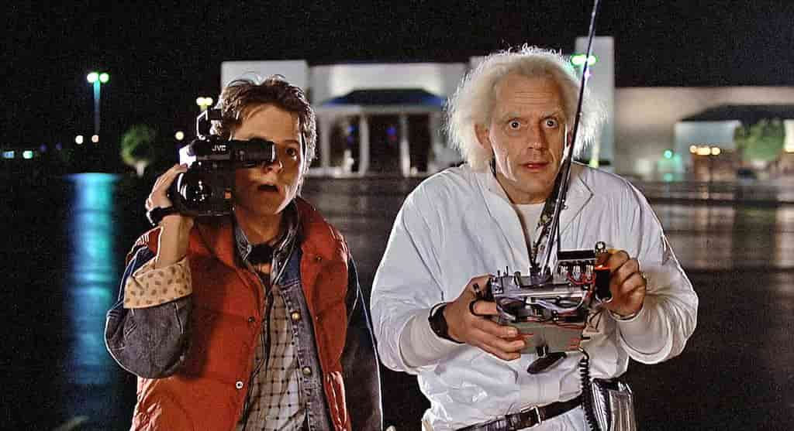
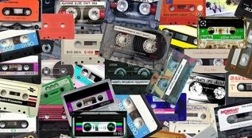

Los años 80's
Estuvo marcada por contrastes, entre tensiones, tragedias pero
también grandes avances. Una década de contrastes Las tensiones de
la Guerra Fría entre Estados Unidos y la Unión Soviética, el
terrorismo mundial, la existencia del sida y otras grandes tragedias
marcaron la década de los 80. Pero también fue una época de grandes
avances y descubrimientos como el primer PC o el internet. Además,
fue la década donde brillaron artistas como el rey del pop, Michael
Jackson, y a nivel regional se puso fin a las dictaduras en varios
países de Latinoamérica.


¿Qué había en los 80?
Las tensiones de la Guerra Fría entre Estados Unidos y la Unión
Soviética, el terrorismo mundial, la existencia del sida y otras
grandes tragedias marcaron la década de los 80. Pero también fue
una época de grandes avances y descubrimientos como el primer PC o
el internet.
¿Que usaba la gente en los 80s?
La moda de estos años era extrovertida, prácticamente todo lo que
se te podía venir a la mente, era usable, se impusieron los
colores fuertes, mucha bisutería de grandes tamaños, peinados con
en cabello rizado con un volumen alto, y zapatos de todos los
estilos.
¿Cómo era la cultura en los 80?
A principios de la década de los 80, nuestra urbe comenzaba a
experimentar algunos cambios significativos. La población crecía
cada día más y con ella aparecía un nuevo paisaje urbano. Los
edificios, las industrias y los negocios dejaron atrás las calles
melancólicas llenas de árboles de los años setenta.